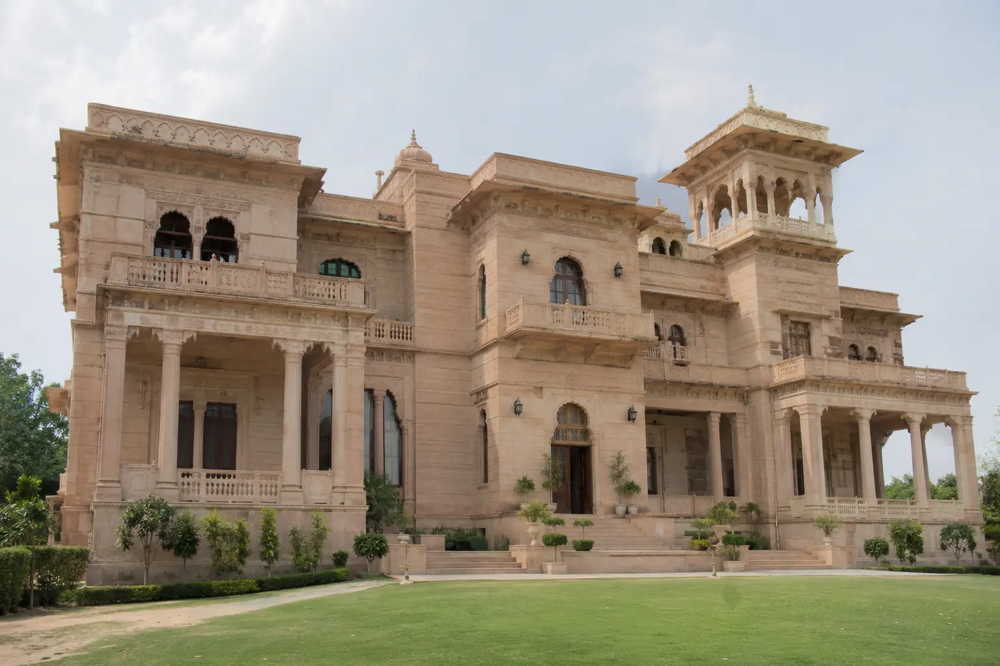
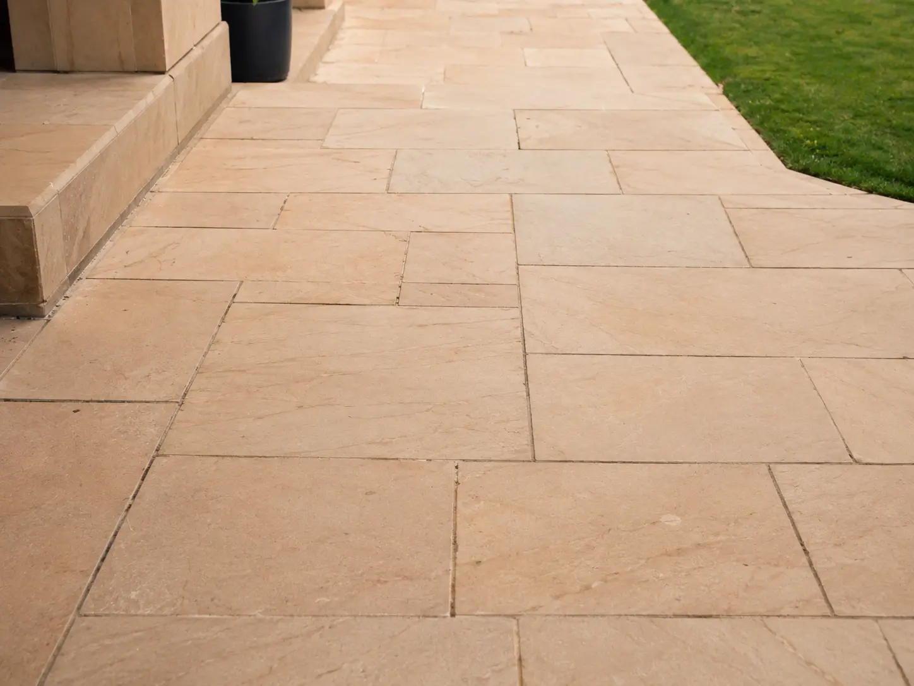
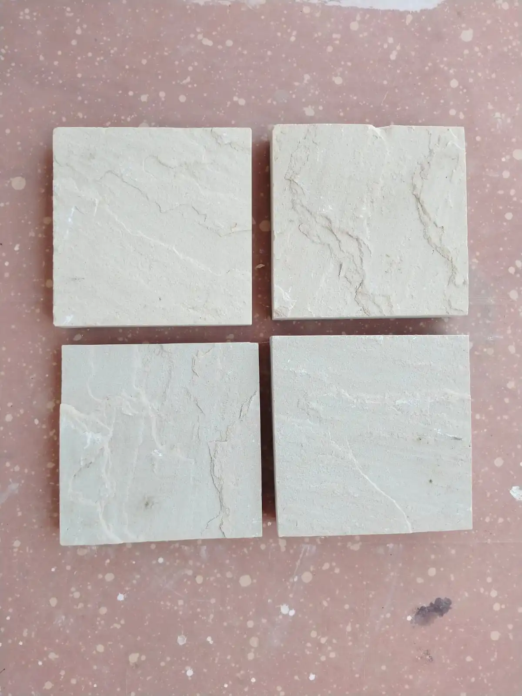

Luxury architecture is defined by timeless materials, elegant textures, and long-lasting durability. Among the premium natural stones used in modern architecture, Dholpur Beige Sandstone has become one of the most preferred choices for luxury villas, landscape projects, wall cladding, and outdoor paving.
Known for its soft beige tone and natural finish, Dholpur Beige Sandstone creates a sophisticated appearance that blends perfectly with both contemporary and classical architectural styles.

Architects and designers prefer Dholpur Beige Sandstone because of its warm natural color and premium visual appeal. The stone enhances exterior elevations, pathways, pool surroundings, and garden landscapes while maintaining a clean and luxurious appearance.
Its natural texture and consistent finish make it suitable for high-end residential and commercial projects worldwide.

Dholpur Beige Sandstone is widely appreciated for its durability and weather-resistant properties. It performs efficiently in outdoor environments and requires minimal maintenance, making it suitable for long-term architectural use.
The stone remains visually attractive over time and provides a timeless natural appearance for luxury construction projects.
At ANAY Premium Stone, we specialize in manufacturing and exporting premium-quality Dholpur Beige Sandstone from Rajasthan, India. With quarry-based sourcing and in-house stone processing capabilities, we provide customized sandstone slabs, tiles, paving stones, and project-based stone solutions for global architectural projects.

Dholpur Beige Sandstone combines natural beauty, durability, and timeless architectural appeal, making it one of the best natural stones for luxury villas and premium outdoor spaces.
For premium sandstone supply and export inquiries, contact ANAY Premium Stone.